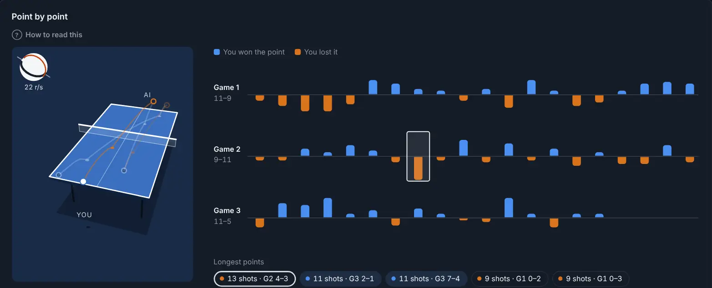
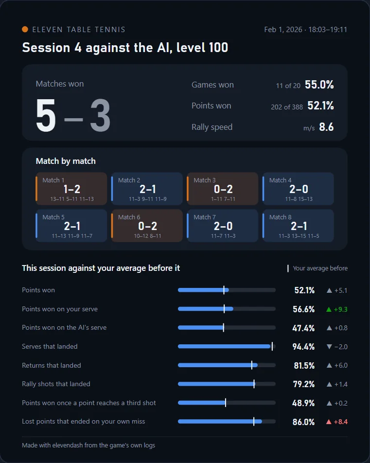
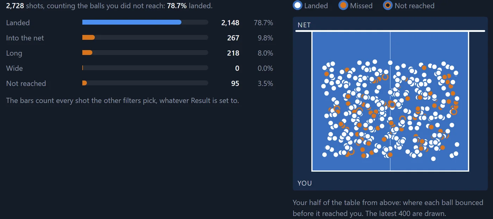
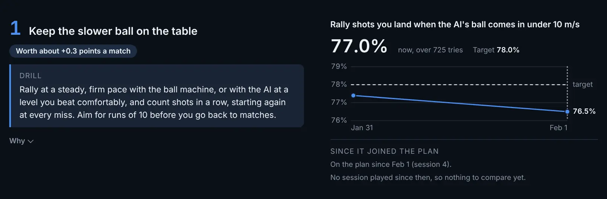
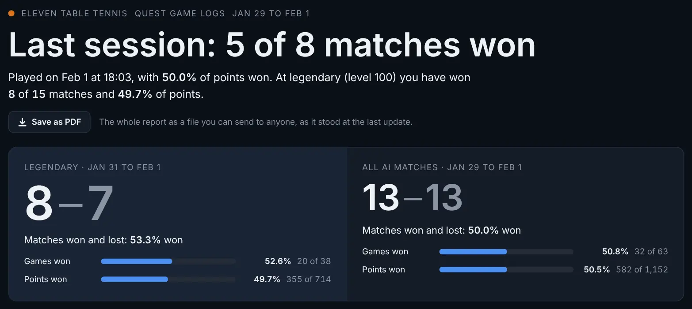
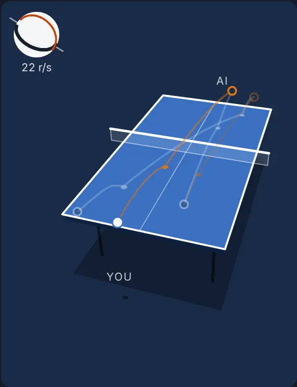

Understand every point.
elevendash turns the logs Eleven Table Tennis keeps on your Meta Quest into match analysis, 3D replays and a training plan of your own. It runs on your computer, and your logs stay there.
Free · Open source · No account · macOS and Linux: install with pipx


The demo dashboard, built from made-up matches: one rally in 3D, every point of the match, and a session card to send or post.
Review every point
Every rally replayed from the ball contacts the game logs, in 2D or 3D, with each shot's type, speed and spin.
Track your progress
Every session against your average at the same AI level, and your form over the last 10, 20 or 50 matches.
Train smarter
A plan ranked by how many points a match each item is worth to you, with a drill for each.
What you get
Everything is worked out from the logs by fixed rules, so the same logs always give the same dashboard. No AI service and no account.
Shot analysis
See the balls you miss
Every shot you played, by the ball that came at you: its spin, speed, side and depth.
- The kinds of ball you miss most, against your usual rate
- Where each ball bounced on your half of the table
- How your misses differ from the shots you land
- Any shot opens in the replay


Coaching
Practise what's worth points
A training plan ranked by how many points a match each item is worth to you, worked out from your own points.
- A drill for each item, for the ball machine or the AI
- A chart of where you are against the target
- How each item has moved since it joined the plan
Overview
Know how the session went
A report on your last session, written out: results, notes, and how it compares with your average at the same AI level, with session and all-time win rates.
- A PDF of the whole report when you want one
- A match card or a session card to send or post


Match review
Watch it again in 3D
Drawn from the bat, table, net and floor contacts the game logs. Follow the ball's flight, replay the deciding shot in slow motion with its spin, and step through a match point by point.
Form, stamina, progress
Your floor, whether you start cold or fade late, and progress by day and level with 11hero-style metrics.
Serves and returns
Where your serves land, which ones win points, and how you return the AI's.
Matches you pick
Your numbers over chosen sessions or matches, set against the rest at the same level.
Your notes
A note on any match, gathered under each session and kept in your browser.
Online matches and ratings
One switch turns the dashboard to your matches against people, with your rating match by match.
One file, offline
The dashboard is a single HTML file. Send it to a coach or keep it on a static host.
Dark or light, two languages
English and Traditional Chinese (繁體中文), on your computer or your phone.
Optional videos
A session's headset recording and a highlight reel on your own YouTube channel, unlisted, with every point linked.
No opponent names
Nobody you played online is named anywhere in the dashboard or the cards.
Private by design
Eleven's logs hold more than matches: your Eleven and Meta account tokens, your user id and name, the names of people you played online, sometimes your location. So elevendash keeps them on your computer.
192.168.1.20:8090./getListing and
/downloadFile. Nothing is uploaded or deleted.Never share a raw log. For a bug report, the app's Report for a bug… (or
elevendash diagnose) gives versions, counts and log problems, with nothing private. If a log is
needed too, elevendash redact LOG OUT makes a copy with only the lines elevendash reads: read it
before you share it. More in the privacy notice.
Get started
Eleven Dashboard is an app on your computer: it opens your dashboard in your browser, with an Import new logs button you press after each session.
Windows
Download Eleven-Dashboard-windows.zip from the latest release, unzip it and open
Eleven Dashboard.exe. It isn't code-signed, so Windows may ask first: More info, then
Run anyway.
macOS, Linux, or Python
With Python 3.10 or newer and pipx:
pipx install git+https://github.com/glki6/elevendash
elevendash app # Windows: --shortcut adds it to the Start menu- On the headset, start File Sharing in Eleven: Settings, Network Settings, File Sharing.
- Open the app. Its welcome screen asks for the address the headset shows: type it in and press Check the connection.
- Press Import the logs. Your dashboard opens with every match the logs hold. After each session, the Import new logs button behind the gear brings in the new ones.
With Tailscale on your computer and phone, Settings › Open on my phone shows a code to scan: the same dashboard and Import button on your phone, reachable only by your own devices.
No Wi-Fi sharing? Copy the ALL-*.log files off the headset any other way and use
From files…. Everything also works from the command line (elevendash update); the full guide is
in the README.
Against the AI, and online
elevendash is built for matches against the AI: the game logs every ball contact by both players, so the whole dashboard works. Matches against people online are its second side: a switch at the top turns the page to them, with your rating match by match. The two sides are added up apart, and no opponent's name appears anywhere. The online side should work, but treat it as untested: it is checked on generated matches and on one real online match, where both players' numbers matched 11hero's.
It is inspired by 11hero, whose metric definitions it follows.
elevendash is early: tested on one player's logs (Quest 3S, AI levels 75 to 100, a few hundred matches) and on generated logs. Redacted logs from other headsets, game versions and online matches are welcome; see CONTRIBUTING.
See your next session
point by point.
The demo is the whole dashboard, built from made-up matches against the AI and online.